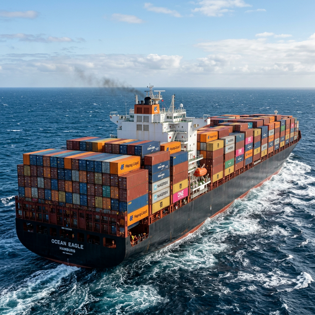

Carga Unitarizada
Portacontenedores
El rey indiscutible del comercio marítimo mundial. Diseñado exclusivamente para transportar mercancía en contenedores estandarizados de acero (TEUs). Su diseño de celdas internas los hace extremadamente eficientes para todo tipo de productos manufacturados.
Ventajas
- Alta velocidad en los procesos de estiba y desestiba.
- Excelente multimodalidad (fácil transición a tren o camión).
- Gran protección de la mercancía contra daños y robos.
Desventajas
- Dependencia absoluta de terminales portuarias especializadas con grúas pórtico.
- Inflexibilidad; no son aptos para cargas voluminosas que superan las medidas estándar.
- Necesidad de realizar altas inversiones en construcción.